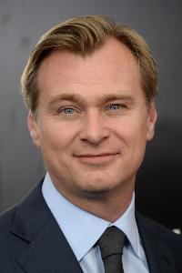

Christopher Nolan es un reconocido director de cine, guionista y productor
británico nacido en Londres el 30 de julio de 1970. Es director de algunas de las
mejores películas del siglo XXI, como lo son Interstellar, Inception o The Dark Knight.
Christopher Nolan tenía un gran interés por el cine desde una temprana edad,
llegando a crear sus primeras películas a la temprana edad de 7 años, junto con
la cámara de su padre. Fue educado en una escuela independiente en Hertfordshrine,
Inglaterra. Más tarde, empezó a estudiar en la University College, mientras que a
la par que estudiaba, realizaba unos cortometrajes en una escuela de cine.
Después de terminar sus estudios en la University College de Londres, empezó
con el cine independiente y después de su gran éxito con su segunda película,
Memento, se transfirió al cine de estudio con Insomnia.